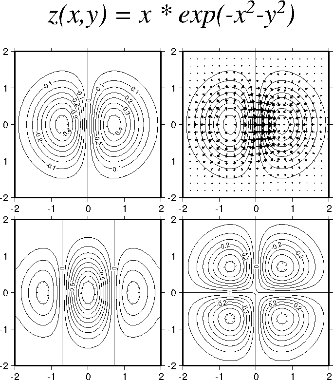

Example 13. In many areas, such as fluid dynamics and elasticity, it is desirable to
plot vector fields. This example presents vector plots superposed on contour maps of
the scalar field and its gradients. The program grdcontour did the contouring, while
the program grdvector drew the vectors. grdmath was used to make the data
set, and gradients extracted using grdgradient.
 View GMT script.
View GMT script.
 Download zipped PostScript file.
Download zipped PostScript file.
 Back
Back